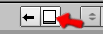

Blenderclonk
Diese Anleitung erklärt den Umgang mit dem Clonkmodell für Blender.
Wichtige Dateien:
Natürlich wird Blender benötigt! Ohne Blender geht hier nichts. Wer also noch kein Blender hat sollte es sich deswegen erst von
www.blender.org runterladen und installieren.
Blender installiert? Dann kann es ja weitergehen...
Die wichtige Hauptdatei, ist
Clonk.blend. In ihr sind das Armatureobjekt (Skelett des Clonkes) und die Scripte gespeichert. Zum Erstellen der Grafiken wird
Anigrab.exe benötigt, das im gleichen Verzeichnis liegen sollte wie die .blend Datei. Um die Scripte richtig aus zu führen wird eine Pythoninstallation benötigt. Diese kann von
www.python.org geladen werden. Es gibt dann noch vier wichtige
Unterordner:
- Im Ordner Actions sind alle Animationen, die für die einzelnen Clonks gebraucht werden als .anim Datei abgelegt.
- Der Ordner Clonks enthält .mesh Dateien, in denen die Meshes der einzelnen Clonks gespeichert sind. In den jeweiligen .act Dateien ist dann zu dem Clonk die Abfolge der Actions gespeichert, in der Reihenfolge wie sie dann später in der Graphics.png erscheinen soll.
- Im Ordner Tools sind die Tools für die Animationen gespeichert. Das sind die Werkzeuge, die der Clonk bei verschiedenen Animationen verwenden soll, wie z.B. die Schaufel oder den Hammer.
- Im Ordner Graphics werden dann nach dem Rendern die Graphics.png Dateien für die Clonks abgelegt.
Clonk laden:
Um den Renderclonk zu starten muss die Datei Clonk.blend geöffnet werden. Jetzt sieht man unten rechts in der Ecke die Scriptgui (Benutzeroberfläche des Scriptes).
Dort kann man nun mit
"Load Clonk" einen Clonk aus dem Unterordner Clonks auswählen. Mit dem Knopf daneben

kann man auch schnell einen Clonk mit Hilfe eines Menüs auswählen.
"Import Mesh" hilft beim Importieren eines Clonkes (siehe Kapitel Importieren).
Mit Hauptmenü gibt es jetzt folgende Schaltflächen:
-
Action: Hier können verschiedene Einstellungen zur Action gemacht werden.
-
Clonk: Hier wird die Actionliste für den Clonk bearbeitet.
-
Save/Load: Hier kann man Actions und Tools speichern und laden.
-
Render: Dient zum Rendern des Clonkes.
-
Exit: Zurück zum vorherigen Menü zum Laden eines anderen Clonkes.
Achtung: der Clonk wird dabei nicht gespeichert, eventuelle Änderungen gehen verloren!
Dazu gibt es noch eine Eingabezeile in der der Pfad für den temporären Ordner angegeben ist und dort geändert werden kann.
Action
Mit dem Dropdownmenü ganz oben können verschiedene Actions ausgewählt werden. Hat man das Armatureobjekt markiert erschienen dazu im Actionfenster dann die Keyframes der einzelnen Bones. In den unteren Feldern kann man die Länge (Length) der Action einstellen, also wie viele Frames die Action lang ist, und die Breite (X) und Höhe (Y) der einzelnen Framegrafiken. Zudem kann man noch zwei Werkzeuge (Tools) festlegen, die der Clonk bei dieser Action verwenden soll. Diese werden dann jeweils auf den Bone 'Tool1' bzw. 'Tool2' gelegt.
Mit Rename kann die Action umbenannt werden. Mit New wird eine neue Action hinzugefügt, wahlweise mit alten Keyframes oder ohne. Der untere Knopf ist dann zum Speichern der Action. Dies sollte man immer tun, wenn man Keyframes oder Einstellungen zur Action verändert hat. Die Action wird dann im Unterordner Actions gespeichert.
Clonk
Hier sieht man die Liste der Actions des Clonkes. Wenn mehrere Spalten zu sehen sind, enthalten die rechten Spalten immer die Actions, die vor denen kommen, die in der Spalte links davon zu sehen sind. Da oft der Platz nicht ausreicht um alle Actions zu sehen kann man das Fenster mit einem Klick auf  auf den ganzen Bildschirm vergrößern. Mit einem erneuten Klick auf diese Schaltfläche kann man das Fenster wieder verkleinern.
Zum nun die Liste zu verändern muss kann man auf eine Action klicken und dann statt dessen eine andere auswählen. Mit REMOVE kann man die Action aus der Liste löschen. Mit INSERT wird über der Action ein Platz eingefügt. Die Actions mit einem U davor sind Actions, die in der Liste noch nicht vorkommen. Die abgesetzte Box am unteren Ende der Liste enthält die Action für das Picturebild des Clonks.
Darunter kann man den BaseZoom einstellen. Das ist die Zoomeinstellung der Kamera, und wird benötigt falls man ein Mesh hat das zu groß ist und kleiner dargestellt werden soll, bzw andersherum. Diese Einstellung wird aber normalerweise bei den Clonks nicht benötigt. Der unterste Schalter speichert die Actionliste und das Mesh des Clonkes.
Achtung: Die Clonk dürfen immer nur aus einem Mesh bestehen! Hat man zwei Meshes können diese mit Strg+J verbunden werden.
Auch muss immer über das Scriptinterface gespeichert werden und nicht mit der normalen Blender-Speicherfunktion! Dabei werden jedoch exotische Einstellungen nicht exportiert! Also wenn nach dem Laden z.B. ein bestimmter Modifier oder eine Textureinstellung nicht aktiviert ist, liegt es daran, das diese nicht unterstützt wird.
Save/Load
Hier können Actions und Tools geladen werden. Am Anfang beim Laden des Clonkes werden nur die Actions und Tools geladen, die der Clonk benötigt. Falls man weitere Actions von anderen Clonks braucht kann man diese hiermit laden. Dabei kann man mit einem Klick auf den Schalter sich die
Action/Tool mit dem Menüsystem aussuchen oder mit einem Klick auf
direkt aus einem Dropdownmenü aussuchen.
Dieses Menü dient auch zum Speichern. Man kann hier eine Action, ein Tool und den Clonk speichern. Action und Clonk können auch in den anderen Untermenüs (Action bzw. Clonk) gespeichert werden. Tools können nur hier gespeichert werden.
Das Eingabefeld ganz unten dient zum ändern des Clonknamens. Hat man z.B. den normalen Clonk geladen und bearbeitet kann man ihn hier vor dem Speichern umbenennen, damit der normale Clonk nicht überschrieben wird.
Achtung: die normale Speicherfunktion von Blender kann hier NICHT zum speichern verwendet werden. Zum Speichern bitte immer die Scriptgui (das Fenster unten rechts) verwenden.
Render
Mit einem Klick auf die Renderschaltfläche öffnet sich ein Menü. Hier können verschiedene Actions ausgewählt werden, die separat gerendert werden sollen. Mit -All- kann der gesamte Clonk durchgerendert werden.
Mit weiteren Untermenü kann man dann auswählen ob man mit oder ohne Overlay gerendert haben möchte. Both rendert dabei beides, Graphics.png und Overlay.png. Graphics/Overlay rendern jeweils nur eines von beiden. Mit Full kann man dann beides in eine Grafik rendern. Dies dient dazu dass man sich den Clonk nach dem Rendern besser anschauen kann.
Beim Rendern wird jeder Einzelframe im temporären Verzeichnis gespeichert. Diese werden dann nach dem Rendern mit Anigrab zur Grafik zusammengebaut. Diese findet sich dann im Ausgabeordner /Graphics/Clonkname/Graphics.png. Dabei werden die Actions in der Reihenfolge, wie sie in der Liste vorkommen in die Grafik gestellt. Die Breite der Grafik richtet sich dabei nach der breitesten Action. Passen mehrere Actions nebeneinander werden sie auch so in die Grafik gestellt. Zum Schluss wird das Picture an einen freien Platz oder das Ende der Grafik gestellt. Damit man die ActMap zu dem Clonk besser erstellen kann werden die Positionen der Actions in einer Datei im Ausgabeordner gespeichert.
Wird nur eine einzelne Action gerendert, dann wird trotzdem versucht die gesamte Grafik zu bauen. Es sollten also von den anderen Actions schon gerenderte Frames in dem temporären Ordner liegen. Diese Funktion dient dazu, dass man nicht immer alle Actions neu rendern muss, wenn man nur an einer Action etwas verändert hat. Zu Anfang muss jedoch einmal komplett durchgerendert werden, damit die Grafiken der anderen Actions schon im temporären Ordner liegen.
Anmerkung
Generell werden alle Materialien, die mit Overlay* anfangen, bei Graphics nicht gerendert. Bei Overlay werden nur die Materialien mit Overlay* gerendert. Bei Full werden beide gerendert. Zusätzlich wird bei Full noch das Material OverlayColor blau statt weiß gefärbt.
Das Material Face wird in den normalen Animationen mit der Textur 'Face' belegt und beim Picture mit 'Face2' geskinnt. Dies ist nötig, da das hochauflösende Gesicht in der kleinen Animation untergehen würde und deswegen eine gröbere Textur verwendet werden muss.
Tools sind die Werkzeuge des Clonks, die er bei verschiedenen Animationen verwendet. Die Tools des Standartclonks sind Schaufel, Axt, Hammer und Flasche. Beim Ritter kommen dann noch diverse Waffen dazu.
Um ein neues Tool zu erstellen muss zunächst ein passendes Mesh gebaut werden. Wichtig hierbei ist auch, dass das Tool nur aus einem Mesh besteht. Hat man ein Mesh modelliert muss es noch passend platziert werden, damit es später bei der Verwendung auch richtig am Bone sitzt. Dazu setzt man am besten die Action 'Empty' für das Armatureobject (oder eine andere Animation, die keine Tools verwendet). Jetzt sieht man über dem Kopf des Clonkes die beiden Toolbones auf einer Stelle. Das Mesh muss nun so plaziert werden, dass die Stelle, an der der Clonk das Tool anfassen soll direkt auf dem Bone zu liegen kommt. Das ganze am besten noch von verschiedenen Ansichten prüfen.
Nun sollte das neue Tool noch passende benannt werden. Dabei sollte Objectname und Meshname identisch sein.

Jetzt kann das Tool über
Save/Load und
'Save Tool' gespeichert werden. Dazu dann das Tool aus der aufklappenden Meshliste auswählen. Das Tool wird nun unter /Tools/toolname.mesh gespeichert.
Importieren
Um einen Clonk zu importieren muss auch erst Clonk.blend geladen werden. Jetzt brauchen wir das zu importierende Clonkmesh. Dieses kann über File->Append or Link aus der alten Datei geladen werden. Dazu die Datei in dem geöffneten Menü auswählen, dann auf Objects und dann das Objekt wählen, dass den Clonk enthält. Wichtig ist, dass der geladene Clonk nur aus einem Mesh besteht! Besteht er aus mehreren müssen diese zunächst mit beide selektiert (Shift+Rechtsklick) und mit Strg+J verbunden werden. Das neue Mesh muss jetzt noch auf den Namen des Clonkes umbenannt werden.
Dabei sollte Objectname und Meshname identisch sein. Danach kann das selektierte Mesh mit einem Klick auf 'Import Mesh' importiert werden. Im Untermenü Clonk können dann die Actions für den Clonk angepasst werden und der Clonk gespeichert werden. Jetzt kann man ihn genauso wie die anderen Clonks verwenden.
Randrian, Mai 2008